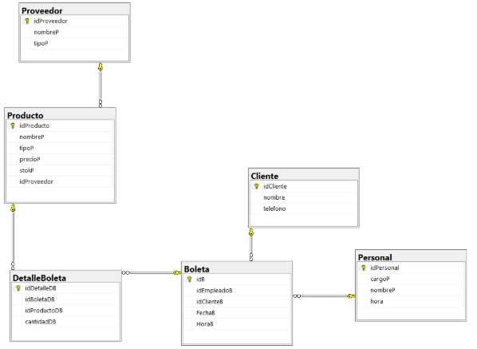
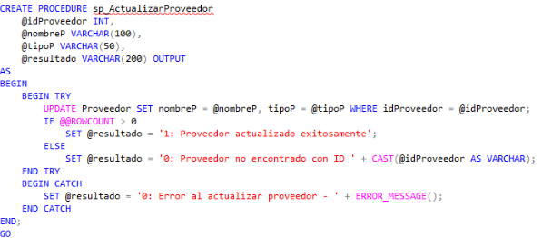
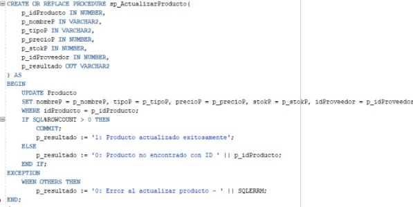
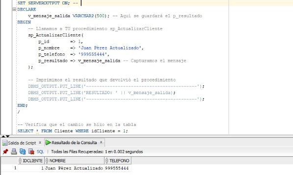
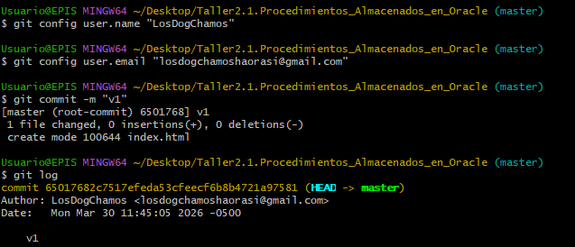

El presente trabajo documenta la implementación de procedimientos almacenados en Oracle, desarrollados a partir del modelo relacional obtenido en el diagrama del taller 1.4. Dicho diagrama define la estructura de la base de datos del equipo “Los Dog Chamos”, la cual sirvió como base para automatizar las operaciones fundamentales de gestión de información: Insertar, Actualizar y Eliminar en cada tabla. El objetivo principal es optimizar la manipulación de datos, centralizar la lógica de negocio y garantizar la integridad referencial mediante el uso de excepciones y validaciones PL/SQL.
Problema identificado: Operaciones manuales con sentencias SQL directas generaban errores humanos, inconsistencias y falta de control de integridad referencial.
Solución: Implementar procedimientos almacenados en Oracle (PL/SQL) que automaticen las operaciones CRUD, centralizando la lógica de negocio y manejando excepciones. Se partió del diagrama relacional del taller anterior (Carrito Cafetero / Sistema de Ventas) que incluye entidades como Proveedor, Producto, Cliente, Personal, Boleta, DetalleBoleta.

Se diseñaron procedimientos para cada tabla: sp_InsertarX, sp_ActualizarX, sp_EliminarX. En la primera etapa se trabajó en SQL Server con sintaxis T-SQL y posteriormente se adaptó a Oracle PL/SQL, utilizando cursores, manejo de excepciones y parámetros OUT para mensajes de éxito/error (1: éxito, 0: error).
@idProducto INT, @nombreP VARCHAR(100)...
AS BEGIN TRY
UPDATE Producto SET ... WHERE idProducto = @idProducto;
IF @@ROWCOUNT>0 SET @resultado='1: éxito'
ELSE SET @resultado='0: no encontrado'
END TRY
BEGIN CATCH ... END CATCH
p_id NUMBER, p_nom VARCHAR2, ... , p_resultado OUT VARCHAR2)
IS BEGIN
UPDATE Producto SET ... WHERE idProducto = p_id;
IF SQL%ROWCOUNT > 0 THEN
p_resultado := '1: Actualización correcta';
ELSE p_resultado := '0: Producto no existe';
END IF; COMMIT;
EXCEPTION WHEN OTHERS THEN
p_resultado := '0: Error - '||SQLERRM; ROLLBACK;
END;



SQL> DECLARE
res VARCHAR2(200);
BEGIN
sp_ActualizarCliente(1, 'Rodrigo Andia', '999888777', res);
DBMS_OUTPUT.PUT_LINE(res);
END;
/
> 1: Cliente actualizado exitosamente
PL/SQL procedure successfully completed.

| Tabla | Procedimiento Insertar | Procedimiento Actualizar | Procedimiento Eliminar |
|---|---|---|---|
| Proveedor | sp_InsertarProveedor | sp_ActualizarProveedor | sp_EliminarProveedor |
| Producto | sp_InsertarProducto | sp_ActualizarProducto | sp_EliminarProducto |
| Cliente | sp_InsertarCliente | sp_ActualizarCliente | sp_EliminarCliente |
| Personal | sp_InsertarPersonal | sp_ActualizarPersonal | sp_EliminarPersonal |
| Boleta | sp_InsertarBoleta | sp_ActualizarBoleta | sp_EliminarBoleta |
| DetalleBoleta | sp_InsertarDetalleBoleta | sp_ActualizarDetalleBoleta | sp_EliminarDetalleBoleta |
- ✔ Se automatizaron las operaciones CRUD para todas las tablas del modelo relacional, mejorando la integridad referencial y la mantenibilidad.
- ✔ La migración de SQL Server a Oracle se realizó con éxito adaptando tipos de datos (IDENTITY, TIME → INTERVAL DAY TO SECOND) y manejo de transacciones.
- ✔ Cada procedimiento devuelve mensajes con formato "1: éxito / 0: error" para facilitar la integración con aplicaciones externas.
- 📌 Sugerencia: Implementar logs de auditoría y agrupar procedimientos en paquetes PL/SQL para mejorar la organización.
- 📌 Extender los procedimientos para operaciones transaccionales que involucren múltiples tablas (como sp_RegistrarVenta ya implementado).
LosDogChamos. (2026). Taller-2.1.-Procedimientos-Almacenados-en-Oracle [Repositorio de código]. GitHub.
https://github.com/LosDogChamos/Taller-2.1.-Procedimientos-Almacenados-en-Oracle (repositorio privado del equipo).
➜ Versión base con todos los procedimientos almacenados y documentación adjunta.